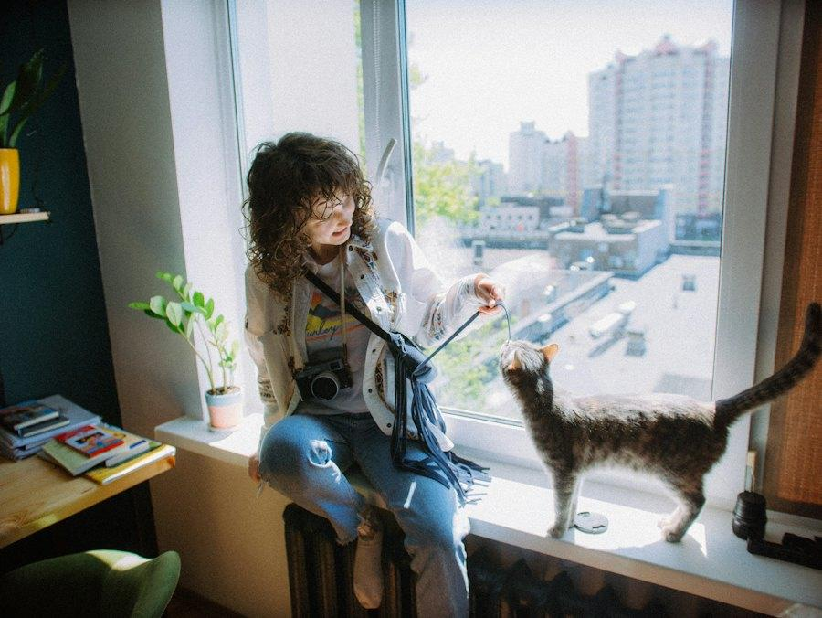

Warm-up · Quiet or full?
Which is more relaxing — a quiet Sunday alone, or a Sunday full of plans with people?


Teacher notes · §1 Warm-up
Pedagógica
- Lee el Hook con 🔊 o en vivo y espera 5 segundos. Acepta cualquier respuesta: “Alone!”, “People!”, una cara, un gesto.
- Votación: grupo vota en el chat o con la mano; en 1:1 el alumno elige y tú defiendes el lado contrario para abrir el desacuerdo.
- No enseñes todavía “because”; si sale solo, celébralo. Máximo 4 minutos, cero corrección.
Engagement
- Desacuerdo de la ficha: unos dicen que un domingo lleno de gente es mejor descanso; otros, que la verdadera relajación es estar solo y sin planes. Pon a los dos “equipos” a mirarse.
- “Today we settle this — with real reasons, in English.”
Crecimiento
- Anota la frase exacta del alumno (aunque sea una palabra). Al final la comparas con su “Sunday Debate”.
Vocabulary · 10 words to win a debate
Tap to flip · 🔊 to listen
0 / 10 flippedMatch the two halves · say the full sentence
0 / 6 pairsTap the start, then the end. Say the full sentence out loud before you tap.
Dead Words on the Board
Ten words are pinned on the board. Use one in a real comparison out loud (“To be honest, the park is quieter than the mall.”). Correct? The note falls off. Class goal: an empty board before the timer ends.
Teacher notes · §2 Vocabulary
Pedagógica
- Tarjetas: tú dices la palabra y el ejemplo, el alumno repite 2 veces. “Which one…?” se dice con entonación descendente; “to be honest” y “in my opinion” como un solo bloque.
- Match: el alumno dice la oración completa en voz alta antes de hacer clic.
- Dead Words (VOC-04): la palabra cae SOLO cuando alguien la usa en una comparación real y correcta hablando (dos opciones + comparativo o Which one…?). Selecciona la nota, luego ✓ o ✗. “Because” cuenta solo con una razón completa: “because it's quieter”, no “because quiet”.
- Meta colectiva: pizarrón vacío antes de 4:00. El cierre se llena solo.
Engagement
- Grupo: los equipos A y B compiten por quién tumba más notas, pero la meta es de toda la clase. 1:1: el alumno tumba las notas; tú das el modelo solo si se atora 10 segundos.
- “Ten words. Four minutes. Let's clean the board!”
Crecimiento
- Las notas que sobrevivan vuelven en la Misión: el alumno debe usarlas en el Sunday Debate.
Grammar · Which one…? Because…
Read the chat. Which words ask? Which word gives the reason?

Sunday plan: the park or the mall? Which one is more relaxing for you?
The park, because it's quieter.
Really? Why do you think that? The park is more crowded on Sunday!
To be honest, the mall is more crowded, because everybody goes there.
Ask · Answer · Ask why
1 · Ask
Which is easier for you?
2 · Answer + one reason
This one, because it's quieter.
3 · Ask why
Why do you think that?
| pattern | example | |
|---|---|---|
| ? | Which one is + comparative? | Which one is more relaxing? Which is easier for you? |
| + | This one / The ___, because + one reason | The park, because it's quieter. |
| ? | Why do you think that? | — In my opinion, the café is better, because it's quieter. |
| − | isn't + comparative · recognize only, not today | The mall isn't quieter. |
| ++ | two or more reasons · not today | …because it's quieter and cheaper and… |
Today: two options, one comparative, one reason with because. The gray rows are only to recognize.
¿Qué es? Which one…? sirve para preguntar cuál de dos opciones.
¿Cómo se responde? La respuesta se justifica con because + una razón breve: This one, because it's quieter.
¿Cuánto decir? En este nivel basta UNA razón, sin encadenar varias con and o also.
Para pedir la razón: Why do you think that? · Para suavizar tu opinión: I think…, In my opinion…, To be honest…, Actually…
Say it right
Choose the correct form
Ladder Sentences — climb without breaking
Start with a short comparison. Add one thing on each rung: “than…”, then one reason with “because”, then “I think / In my opinion / To be honest”. The sentence must stay correct. A mistake breaks the ladder. Score = height.
Mistakes Spanish speakers make
Teacher notes · §3 Grammar
Pedagógica
- Explicación máximo 5 minutos: chat → 3 ideas → tabla. Level boundary: siguen siendo DOS opciones; se agrega Which…? y UNA razón con because. Nada de cadenas de razones (and… also…).
- Práctica A es mecánica (máx. 1/3 del bloque).
- Ladder Sentences (GRM-05, etapa Meaningful): el equipo dice el peldaño; tú decides ✓ (aguanta) o ✗ (se rompe). Solo después de juzgar se muestra el modelo. Desviación consciente de la ficha: el peldaño “+ segundo adjetivo con and… too” se reemplazó por “+ I think / In my opinion / To be honest”, para no romper el level boundary (una sola razón).
- Grupo: Team A y Team B suben su propia escalera con el mismo par. 1:1: el alumno sube y tú juzgas. Cierre: “Nuestra mejor escalera tiene __ peldaños: ___” (se llena solo; si escriben su oración real, el cierre la usa).
Engagement
- “How high can your ladder go before it breaks?”
- Celebra en voz alta cada peldaño 4: “Four rungs! Nothing broke!”
Crecimiento
- Pronunciación de la ficha: Which /wɪtʃ/ con “ch” (la ficha dice “th sorda”: es una errata; el sonido es /tʃ/) y pausa breve antes de la razón.
- En S31 y S32 estas escaleras vuelven combinadas con going to e invitaciones.
Reading · The Sunday poll


Who thinks what — and why?
Teacher notes · §4 Reading
Pedagógica
- Primera lectura en silencio (1 min) buscando SOLO quién prefiere qué. Segunda lectura en voz alta: un alumno por comentario, con pausa antes de “because”.
- Trampa: Sam vota por el mercado, pero solo temprano (porque a las 8 está más tranquilo).
Engagement
- “Who are you: Lupita, Don Raúl or Sam?” Que cada alumno lo diga con una razón.
Crecimiento
- Reto extra: escribir su propio comentario para la encuesta con Which one / because (una sola razón).
Speaking · The Information Gap
Choose the case and your sheet
Pairs: Student A and Student B each open a different sheet. Never look at your partner's screen — only ask.
1:1: you take Sheet A. The teacher has Sheet B. Ask the teacher for the missing information.
Complete your sheet
Which one is better? Decide together.
8 questions · always 2 follow-ups
The teacher asks. Answer with one comparison + because. Then ask back: “Which one is better for you?”
Teacher notes · §5 Speaking
Pedagógica
- Reglas en 3 frases: “You have half of the information. Ask your partner — never look. Then decide together which one is better, with one reason.”
- B18-08 The Information Gap: cada “?” se marca SOLO después de que el alumno hizo la pregunta en inglés y escuchó la respuesta. El contador de comparaciones sube cuando la pareja dice una comparación completa (“The lake is quieter than the mall.”).
- Grupo: breakout en parejas, A abre la hoja A y B la hoja B (cambian de caso en la segunda ronda). 1:1: el alumno tiene la hoja A; tú tienes la hoja B (usa “Profe: ambas hojas”).
- Entre rondas usa las 8 preguntas de la ficha: nunca aceptes respuesta de una palabra; pide siempre los 2 follow-ups.
Engagement
- Ninguna opción es obvia: cada una tiene una ventaja y una desventaja. Si deciden muy rápido, pregunta: “Really? Why do you think that?”
- Cierre: cada pareja dice su decisión a la clase (se llena sola).
Crecimiento
- Cuenta las comparaciones correctas de cada alumno: compáralas con S28.
Mission · Sunday Debate

Two ways to spend Sunday. One agreement.
Pick a debate card. Student A defends option 1, Student B defends option 2. Ask each other “Which one…?”, defend your side with one reason, then agree — or convince your partner.
Group: pairs in breakout rooms, one card per pair. Say the final agreement to the class.
1:1: you and the teacher. Then switch sides and debate a new card.
Pick a debate card
Success: both of you use Which one…? + a comparison + because at least once.
The final agreement
Teacher notes · §6 Mission
Pedagógica
- Marca cada movimiento SOLO cuando el alumno lo dice sin leer y bien: Which one…? / comparativo correcto / because + una razón.
- Éxito (ficha): ambos usan Which one…? + comparativo + because al menos una vez cada uno. Evidencia: acuerdo final dicho en voz alta con la razón que ganó.
- Termómetro Mild–Spicy (kit visual): fija el tono antes de empezar. Spicy = cada quien defiende su lado 3 veces antes de ceder.
- No interrumpas: el feedback va en §7.
Engagement
- Anuncia: “And the winner is… ___, because ___!” El cierre se llena con la razón que escriben.
Crecimiento
- “In Session 30 you'll pass a message to someone who doesn't speak English.”
Wrap-up · Better the second time
✓ Success
↑ Upgrade
✎ Repair
↻ 2nd try
Repeat your Sunday Debate with the teacher. Use the upgrades. Same card, better English.
60 seconds · 5 questions
My second debate is better because…
You can ask which option is better and defend your opinion with one reason.
Homework: ask someone at home “Which one…?” about two real options and write down their reason in English. Next: Session 30 · Pass the Plan
Teacher notes · §7 Wrap-up
Pedagógica
- Máximo 2 aciertos y 3 correcciones de alto valor (más quieter, more relax, because is). Luego segundo intento del debate contigo.
- Exit quiz en voz alta: el alumno dice la respuesta antes de hacer clic. El timer no da puntos por rapidez.
Engagement
- Compara con la frase que anotaste en §1: “Minute 1: ‘Alone!’ Minute 58: ‘To be honest, a quiet Sunday is more relaxing, because it's quieter.’”
Crecimiento
- Registra en el portal: resultado de Dead Words, altura de la mejor escalera, decisión del Information Gap y acuerdo del Sunday Debate.
- Tarea (Práctica de la ficha): preguntar “Which one…?” en casa y anotar la razón en inglés. Reciclaje: comparativos + justificación vuelven en S31 y S32.